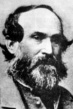

|

|

|
|
|
Lawyer, Confederate general, and architect of the "Lost
Cause" ideology, Jubal A. Early was born on November 3,
1816, near Rocky Mount, Franklin County, Virginia. The son
of Joab Early, a substantial holder of land and slaves, and
Ruth Hairston Early, Jubal Early entered West Point in 1833
and graduated 18th in the class of 1837. He resigned in 1838
to return to Rocky Mount, where he practiced law for the
next twenty years. As s delegate to the Virginia secession
convention in 1861, he maintained a strong unionist stance
until Abraham Lincoln's call for 75,000 volunteers to
suppress the rebellion. Virginia's secession on April 17th
galvanized Early, who immediately accepted a colonel's
commission in the Confederate army. Early quickly displayed
marked aptitude as a soldier. He played an important role as
a brigade commander at First Bull Run, winning promotion to
brigadier general in August 1861. Badly wounded at the
battle of Williamsburg on May 5, 1862, he returned to the
army to fight with distinction at Malvern Hill, Second Bull
Run, Antietam, and Fredericksburg. Promotion to major
general in April 1863 rewarded Early's excellent service.
Robert E. Lee demonstrated confidence in Early by
assigning him difficult tasks. During the Chancellorsville
campaign, for example, Early held the front at
Fredericksburg while most of the army marched west to
confront Joseph Hooker's flanking force. At Gettysburg,
Early participated in the successful Confederate assaults on
the afternoon of July 1st and advocated a joint attack
against Cemetery Hill by the corps of A. P. Hill and Richard
S. Ewell that evening. Strong and steady leadership at the
battles of the Wilderness and Spotsylvania in May 1864
brought him promotion to lieutenant general and command of
the Second Corps in Lee's army. Poised to start his most
famous operations, Early was a respected if not loved
officer. A soldier described him in 1864 as "one of the
greatest curiosities of the war," a man "about six feet
high" whose "voice sounds like a cracked Chinese fiddle, and
comes from his mouth ... with a long drawl, accompanied by
an interpolation of oaths." His men called him "Old Jube,"
while Lee affectionately referred to him as "my bad old
man."
In mid-June 1864, Lee sent Early and his command to the
Shenandoah Valley. Over the next month, Early cleared the
Valley of Federal troops, crossed the Potomac, won the
battle of the Monocacy near Frederick, Maryland, on July
9th, and menaced Washington. A second phase of the Valley
campaign began in August when Ulysses S. Grant ordered
Philip H. Sheridan to crush Early and lay waste to the
Valley. Early's small army, which never numbered as many as
18,000 men, lost decisively to Sheridan's 35-40,000-man
force at Third Winchester on September 19th, at Fisher's
Hill three days later, and at Cedar Creek on October 19th.
Early suffered a final defeat at Waynesboro on March 2,
1865, which ended his career as a Confederate soldier.
After the war, Early remained thoroughly unreconstructed
and devoted most of his energy to creating a favorable
written record of the Confederate military experience. He
wrote to Lee in 1868: "The most that is left to us is the
history of our struggle ... We lost nearly everything but
honor, and that should be religiously guarded." As a leading
proponent of the Lost Cause interpretation of Confederate
history, Early stressed Lee's greatness and the valor of
outnumbered Confederates, while also insisting that only
superior numbers allowed the North to triumph. Early died on
March 2, 1894, in Lynchburg, Virginia.
Source: Joan Waugh, ed., Facts on File Encyclopedia of American
History: Civil War and Reconstruction, 1856 to 1869 (New York: Facts on
File, 2003), 103-104.
|